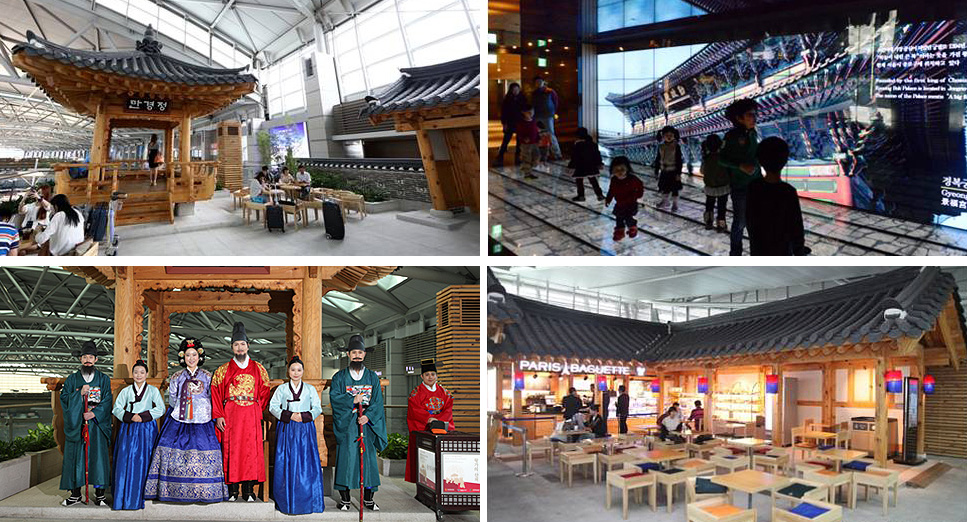
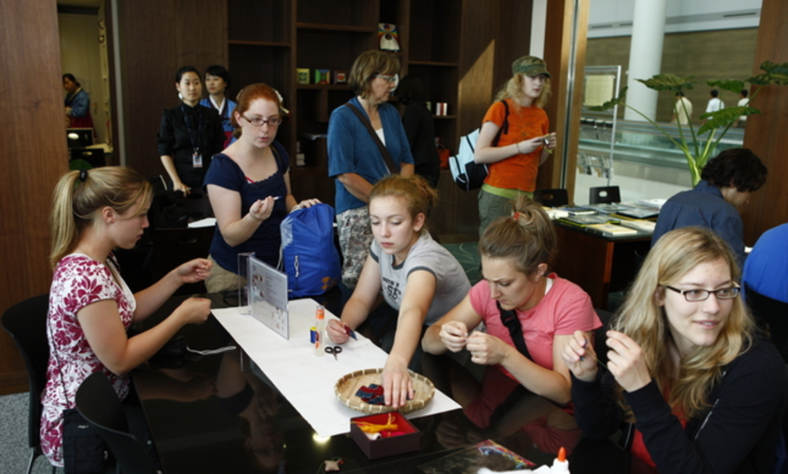
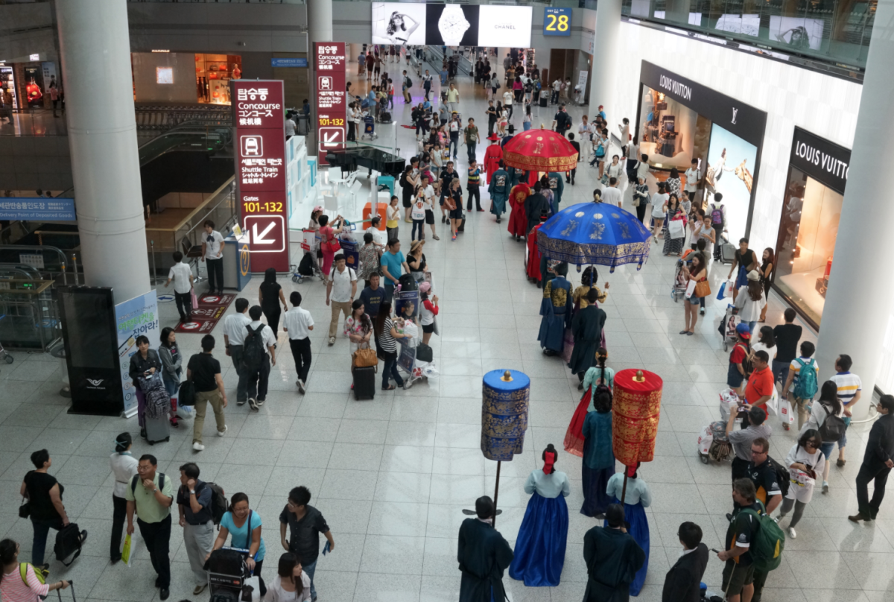
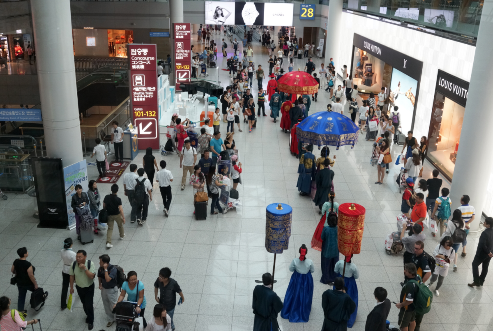

Summary |
Incheon International Airport (IIA) is the largest airport in South Korea, the primary airport serving the Seoul Capital Area, and one of the largest and busiest airports in the world. IIA has been selected as the best airport worldwide by Airports Council International every year since 2005. It is also rated as the world's best international transit airport by Skytrax. I designed airport entertainments and complimentary services for transit passengers to improve customer satisfaction and profitability of the departure/transit lounge. |
Role |
- Organized and implemented design projects for airport entertainments
- Conducted questionnaire surveys and interviewed transit/layover passengers and site staffs to evaluate service satisfaction
- Managed third-party design agencies and handled outsourcing contracts
|
|
Annual exhibitions

Free hands-on experience programs

Parade "Walk of the Royal Family"
 

|